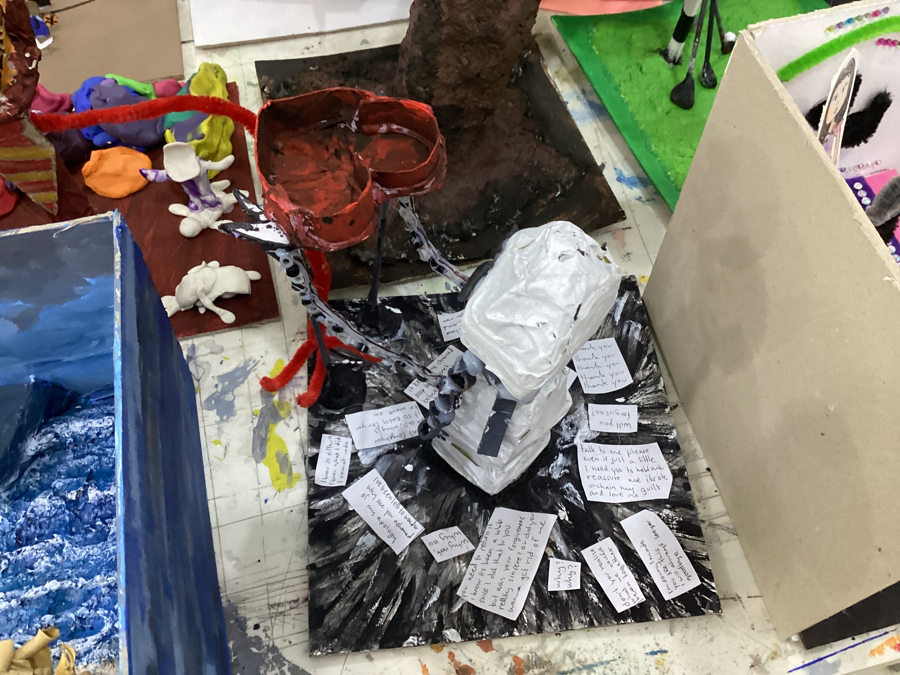
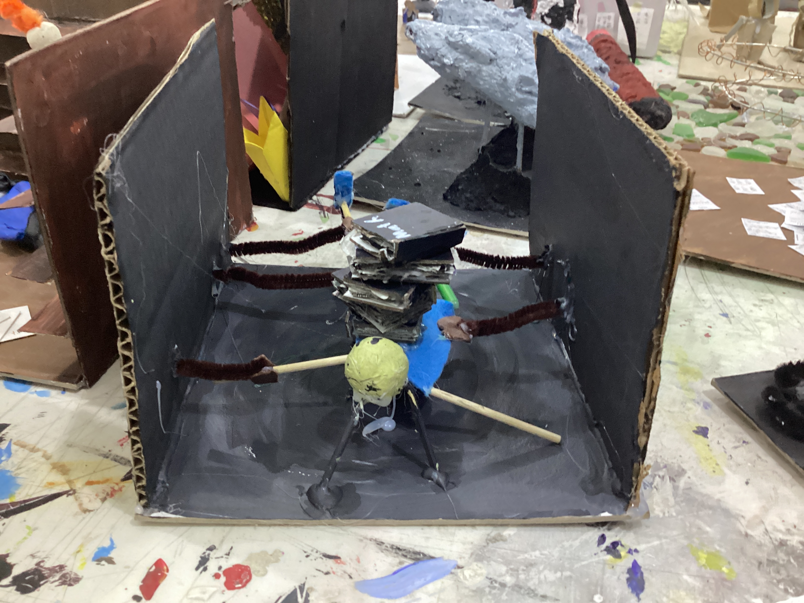

Our project in Visual Arts is integrated with Social Studies. Our task was to create a contemporary sculpture in relation to different communities and peace building. Students are tasked with creating artwork that reflects their chosen community.
In this piece, a lightbulb represents my constant stream of bright ideas and the energy I bring to our school community. To capture my playful side, I added fuzzy wires which is a nod to the fun, silly, and slightly chaotic spirit I try to share with those around me. However, the bulb is crafted rrom ripped paper, a reflection of indecision. It shows the moments I hesitate and tear things down because I’m not sure which path to take.
My artwork shows a power bank as a symbol of a person who gives energy to others. The idea is that others come to it while feeling drained and empty, but leave feeling happy and alive again.
My project depicts an unfinished guitar made of sheet music over a pile of the latter, with a backdrop of finished guitars behind it. The unfinished guitar symbolizes how I'm still learning, compared to other guitarists in my family (which are represented by the backdrop), and the chord charts, tablatures, and sheet music represents how I'm built on practice.



